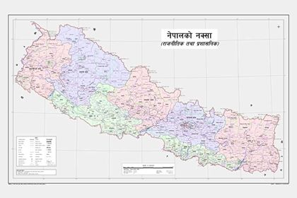

मिति: २०७७ जेठ ८
धन्यवाद नेपाल सरकारलाई यो अदम्य साहसको लागी । सुगौली सन्धी पछि खुम्चिएको हाम्रो भुमि तत्कालीन अवस्थामा ईष्ट इण्डिया कम्पनी लाई बृटिशले फिर्ता वोलाउदा देशभित्र को आन्तरिक राजनीतिक कलहको फाइदा उठाउदै महात्मा गान्धीको कुटिल चालबाजी मा आफ्नो फिर्ता हुनसक्ने भूगोल समेत गुमेको, नेपालको नक्सा समेत भारतीय सहयोगमा नै जारी गरिएको, सुगौली अगाडी भारदारी स्वार्थका कारण विदेशी सेना लाई नेपाल प्रवेश गराई अखण्डता बिथोलेको कारण हाम्रो भूमि आजपनि उत्तर दक्षिण बाट अतिक्रमण भएको छ।
भारतीय पक्षबाट एकपक्षीय तयार पारिएको सन्धि जतिबेला राजा र कांग्रेसका बिच टकराव चलिरहेको र राजाले भारतीय सहयोगमा आफुलाई बलियो बनाउनु पर्ने अवस्थामा महाकाली सन्धि भयो यस्ले नेपालको लिपुलेक लगायतका भूगोल पुःन अतिक्रमण मा परे। यसरी खुम्चिएको नेपालको अतिक्रमित भूभाग समेटेर नक्सा जारी भएको छ यो ज्यादै नै सह्रानीय छ। नागरिक दबाब राजनीतिक एकताको कारण यो सम्भव बनेको हा े। तर देशका लागी आगामी दिनहरु सजिलो हुने छैन भन्ने संकेत देखा पर्न थालेका छन् ।

हतारमा निर्णय गरेर पछी पछुताउने हाम्रो बानी नै बनेको छ । यो विषय यस्तो नबनोस् । भोलि आईपर्ने जुनसुकै चुनौती को सामना गर्ने आन्तरिक तयारीमा सरकारले काम गर्नुपर्ने छ । कसैको उक्साहटमा लागेर नेपालले जारी गरेको यो नेपालको मानचित्र हामिलाई मान्य छैन र नेपालले क्षेत्रिय अखण्डताको बिरूद्ध गरेको यो कामको हिसाव खोज्ने अभिव्यक्ति भारतीय पक्षवाट आईसकेको छ।
नयाँ नक्सा जारी हुनु राष्ट्रिय स्वाभिमान का पक्षमा भएतापनि केहि तयारी पुगेन की भन्न सकिने ठाउँ रह्यो। द्विदेशीय विभिन्न सन्धि सम्झौता को अध्ययन, सन्धि सम्झौता का अन्तर्रा्ष्ट्रिय मान्यता, क्षेत्रिय र अन्तर्रा्ष्ट्रिय तहमा कुटनीतिक पहल लगायत परिआएमा जाईलाग्न सक्ने आन्तरिक तयारी मा केही कमी भएको या भनौ नगरिएको अवस्थामा देखिन्छ।
आन्तरिक राजनीतिमा निकैनै चतुर्याईं गर्नसक्ने के.पि.वली कुटनीतिक मामिलामा केही कमजोर देखिनुहुन्छ, यो परिस्थितिमा सत्ता पक्ष(प्रतिपक्ष, गुट(उपगुट वाट माथि उठेर राष्ट्रिय स्वाधीनता र भौगोलिक अखण्डताको सुरक्षाको लागि सवै एक हुनु आवश्यक छ र वर्तमान सरकारलाई सहयोग गर्न जरुरी छ भूगोल रहे देश रहला देश रहे राजनिती गर्दै गरौंला यस मामिलामा खुट्टा नतानौं, खुट्टा नकमाऔं परिआए मुकाविला सम्मको तयारी मा एक भएर जुटौं ।। २०७७ जेठ ८